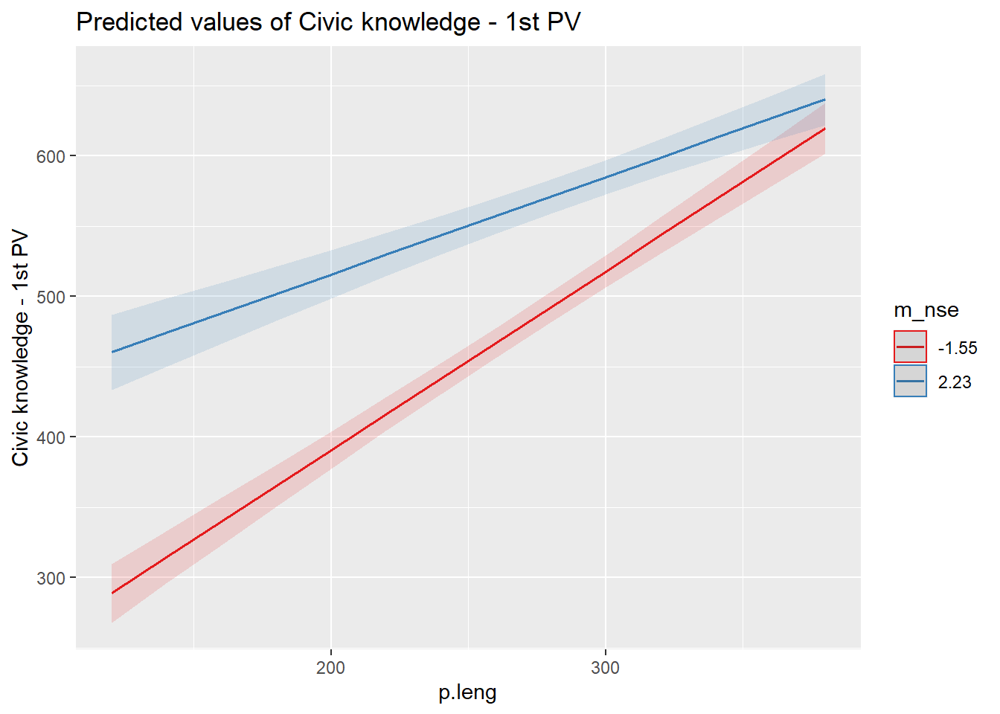

Analisis multinivel
francisco meneses
24-10-2019
Cargar librerías
pacman::p_load(lme4,
reghelper,
haven,
descr,
stargazer,
ggplot2, # gr?ficos
dplyr, # manipulacion de datos
texreg, # tablas lme4
sjPlot #graficos
)load(file = "../input/data/proc/data.RData")library(ggplot2)
library(ggplot2)
library(hrbrthemes)## Warning: package 'hrbrthemes' was built under R version 4.0.2## Registering Windows fonts with R## NOTE: Either Arial Narrow or Roboto Condensed fonts are required to use these themes.## Please use hrbrthemes::import_roboto_condensed() to install Roboto Condensed and## if Arial Narrow is not on your system, please see https://bit.ly/arialnarrow#install.packages("hrbrthemes")
data$alto_nse<-as.character(ifelse(data$nse>=0,1,0))
scatter <-ggplot(data, aes(x=p.civ, y=p.leng, color=alto_nse)) +
geom_point(size=2) +
theme_classic()
data$p.leng_centrado <- (data$p.leng - data$m_p.leng)summary(data)## p.leng p.mat p.nat p.civ
## Min. :126.0 Min. :142.0 Min. :149.0 Min. :232.1
## 1st Qu.:214.5 1st Qu.:235.2 1st Qu.:236.9 1st Qu.:432.1
## Median :255.7 Median :275.0 Median :273.9 Median :502.2
## Mean :251.7 Mean :272.6 Mean :274.7 Mean :498.4
## 3rd Qu.:288.9 3rd Qu.:309.9 3rd Qu.:311.4 3rd Qu.:565.0
## Max. :373.2 Max. :394.4 Max. :416.9 Max. :782.7
##
## nse ip_estudiante ip_padres idschool
## Min. :-2.0800 Min. :0.0000 Min. :0.0000 Min. :1001
## 1st Qu.:-0.6300 1st Qu.:0.0000 1st Qu.:0.0000 1st Qu.:1046
## Median : 0.0700 Median :0.0000 Median :1.0000 Median :1090
## Mean : 0.1816 Mean :0.2296 Mean :0.6548 Mean :1092
## 3rd Qu.: 1.0000 3rd Qu.:0.0000 3rd Qu.:1.0000 3rd Qu.:1138
## Max. : 2.4900 Max. :1.0000 Max. :1.0000 Max. :1178
##
## apert_disc cult_part esp_part Libros
## Min. :16.67 Min. :17.22 Min. :25.41 Min. :0.0000
## 1st Qu.:46.53 1st Qu.:45.66 1st Qu.:41.21 1st Qu.:0.0000
## Median :53.15 Median :53.75 Median :48.22 Median :1.0000
## Mean :53.12 Mean :55.25 Mean :49.33 Mean :0.5041
## 3rd Qu.:58.96 3rd Qu.:68.37 3rd Qu.:52.28 3rd Qu.:1.0000
## Max. :78.16 Max. :68.37 Max. :70.79 Max. :1.0000
##
## Ocupacion Educacion IC3G13A rel_prof
## Min. :10.00 Min. :0.0000 Min. :0.0000 Min. :18.78
## 1st Qu.:33.00 1st Qu.:0.0000 1st Qu.:0.0000 1st Qu.:45.48
## Median :42.00 Median :0.0000 Median :1.0000 Median :53.24
## Mean :45.86 Mean :0.4994 Mean :0.5013 Mean :54.55
## 3rd Qu.:59.00 3rd Qu.:1.0000 3rd Qu.:1.0000 3rd Qu.:64.54
## Max. :89.00 Max. :1.0000 Max. :1.0000 Max. :71.68
##
## S_ABUSE ip_estudiante.or m_nse m_apert_disc
## Min. :37.04 Min. :0.00 Min. :-1.5500 Min. :35.49
## 1st Qu.:37.04 1st Qu.:1.00 1st Qu.:-0.4104 1st Qu.:50.28
## Median :50.42 Median :1.00 Median : 0.1079 Median :53.07
## Mean :49.47 Mean :1.05 Mean : 0.1816 Mean :53.12
## 3rd Qu.:56.17 3rd Qu.:1.00 3rd Qu.: 0.5552 3rd Qu.:56.08
## Max. :87.38 Max. :3.00 Max. : 2.2300 Max. :78.16
##
## clima_prof m_esp_part m_ip_estudiante sd_nse
## Min. :34.53 Min. :25.87 Min. :0.0000 Min. :0.2894
## 1st Qu.:52.08 1st Qu.:41.76 1st Qu.:0.1364 1st Qu.:0.6125
## Median :54.45 Median :48.22 Median :0.2083 Median :0.7231
## Mean :54.55 Mean :49.33 Mean :0.2296 Mean :0.7175
## 3rd Qu.:57.19 3rd Qu.:53.25 3rd Qu.:0.2941 3rd Qu.:0.8101
## Max. :66.72 Max. :70.79 Max. :1.0000 Max. :1.8455
## NA's :10
## m_ip_padres m_cult_part m_p.leng alto_nse
## Min. :0.0000 Min. :22.35 Min. :168.5 Length:3140
## 1st Qu.:0.5385 1st Qu.:52.86 1st Qu.:234.0 Class :character
## Median :0.6486 Median :54.88 Median :250.2 Mode :character
## Mean :0.6548 Mean :55.25 Mean :251.7
## 3rd Qu.:0.7568 3rd Qu.:58.26 3rd Qu.:269.9
## Max. :1.0000 Max. :68.37 Max. :335.9
##
## p.leng_centrado
## Min. :-168.3130
## 1st Qu.: -28.5909
## Median : 0.3501
## Mean : 0.0000
## 3rd Qu.: 29.4851
## Max. : 123.8707
## #table(data$p.leng)
sd(data$p.civ)## [1] 92.71807results_1 = lmer(p.civ ~ 1 + (1 | idschool), data = data, REML=F)
screenreg(results_1)##
## ========================================
## Model 1
## ----------------------------------------
## (Intercept) 492.50 ***
## (4.72)
## ----------------------------------------
## AIC 36467.28
## BIC 36485.43
## Log Likelihood -18230.64
## Num. obs. 3140
## Num. groups: idschool 152
## Var: idschool (Intercept) 2917.17
## Var: Residual 5789.35
## ========================================
## *** p < 0.001; ** p < 0.01; * p < 0.05data$p.leng_centrado <- (data$p.leng - data$m_p.leng)
results_1 = lmer(p.civ ~ 1 + Libros + Ocupacion + Educacion + ip_padres + m_nse + (1 | idschool), data = data, REML=F)
results_2 = lmer(p.civ ~ 1 + Libros + Ocupacion + Educacion + ip_padres + m_nse + m_cult_part + (1 | idschool), data = data, REML=F)
results_3 = lmer(p.civ ~ 1 + Libros + Ocupacion + Educacion + ip_padres + m_cult_part + m_nse + ip_estudiante + (1 | idschool), data = data, REML=F)
results_4 = lmer(p.civ ~ 1 + Libros + Ocupacion + Educacion + + ip_padres + m_nse + ip_estudiante + m_cult_part + p.leng + (1 + p.leng | idschool), data = data, REML=F)## Warning in checkConv(attr(opt, "derivs"), opt$par, ctrl =
## control$checkConv, : Model failed to converge with max|grad| = 34.4135
## (tol = 0.002, component 1)## Warning in checkConv(attr(opt, "derivs"), opt$par, ctrl = control$checkConv, : Model is nearly unidentifiable: very large eigenvalue
## - Rescale variables?;Model is nearly unidentifiable: large eigenvalue ratio
## - Rescale variables?results_5 = lmer(p.civ ~ 1 + Libros + Ocupacion + Educacion + ip_padres + ip_estudiante + m_cult_part + p.leng*m_nse + (1 + p.leng| idschool), data = data, REML=F) ## Warning in checkConv(attr(opt, "derivs"), opt$par, ctrl =
## control$checkConv, : unable to evaluate scaled gradient## Warning in checkConv(attr(opt, "derivs"), opt$par, ctrl =
## control$checkConv, : Model failed to converge: degenerate Hessian with
## 1 negative eigenvaluessave(results_1, file = "../output/images/results_1.Rdata")
save(results_2, file = "../output/images/results_2.Rdata")
save(results_3, file = "../output/images/results_3.Rdata")
save(results_4, file = "../output/images/results_4.Rdata")
save(results_5, file = "../output/images/results_5.Rdata")
regresion_tex <-texreg(list(results_1,results_2,results_3, results_4, results_5 ))
regresion_html <-htmlreg(list(results_1,results_2,results_3, results_4, results_5 ))
save(regresion_tex, file = "../output/images/regtex.Rdata")
save(regresion_tex, file = "../output/images/reghtml.Rdata")
load(file = "../output/images/reghtml.Rdata")inta<-plot_model(results_5, type = "int")
inta
results_7 = lmer(p.civ ~ 1 + Libros + Ocupacion + Educacion + ip_padres + ip_estudiante + m_ip_padres + m_nse + m_nse*p.leng + (1 + p.leng| idschool), data = data, REML=F)## Warning: Some predictor variables are on very different scales:
## consider rescaling## boundary (singular) fit: see ?isSingularresults_8 = lmer(p.civ ~ 1 + Libros + Ocupacion + Educacion + ip_padres + ip_estudiante + m_ip_padres + m_nse + m_nse*p.leng_centrado + (1 + p.leng_centrado| idschool), data = data, REML=F)## Warning in checkConv(attr(opt, "derivs"), opt$par, ctrl =
## control$checkConv, : Model failed to converge with max|grad| = 2.50219
## (tol = 0.002, component 1)## Warning in checkConv(attr(opt, "derivs"), opt$par, ctrl = control$checkConv, : Model is nearly unidentifiable: very large eigenvalue
## - Rescale variables?screenreg(list(results_7,results_8), type="text")##
## =======================================================================
## Model 1 Model 2
## -----------------------------------------------------------------------
## (Intercept) 208.42 *** 463.17 ***
## (14.05) (17.28)
## Libros 6.30 ** 6.21 *
## (2.41) (2.41)
## Ocupacion 0.36 *** 0.36 ***
## (0.09) (0.09)
## Educacion 7.68 ** 7.67 **
## (2.87) (2.87)
## ip_padres 2.93 3.03
## (2.52) (2.52)
## ip_estudiante 13.86 *** 13.86 ***
## (2.81) (2.82)
## m_ip_padres -3.42 -7.84
## (18.50) (26.34)
## m_nse 64.23 *** 46.98 ***
## (9.99) (5.60)
## p.leng 1.03 ***
## (0.03)
## m_nse:p.leng -0.15 ***
## (0.03)
## p.leng_centrado 1.03 ***
## (0.03)
## m_nse:p.leng_centrado -0.15 ***
## (0.04)
## -----------------------------------------------------------------------
## AIC 34884.64 34978.97
## BIC 34969.37 35063.69
## Log Likelihood -17428.32 -17475.48
## Num. obs. 3140 3140
## Num. groups: idschool 152 152
## Var: idschool (Intercept) 1647.22 1169.86
## Var: idschool p.leng 0.01
## Cov: idschool (Intercept) p.leng -3.34
## Var: Residual 3670.63 3622.40
## Var: idschool p.leng_centrado 0.01
## Cov: idschool (Intercept) p.leng_centrado -1.46
## =======================================================================
## *** p < 0.001; ** p < 0.01; * p < 0.05save(results_7, file = "../output/images/results_7.Rdata")
save(results_8, file = "../output/images/results_8.Rdata")int2<-plot_model(results_7, type = "int")
int2
results_7 = lmer(p.civ ~ 1 + Libros + Ocupacion + Educacion + ip_padres + ip_estudiante + m_ip_padres + m_nse + Ocupacion*p.leng_centrado + (1 + p.leng_centrado| idschool), data = data, REML=F) ## Warning: Some predictor variables are on very different scales:
## consider rescaling## Warning in checkConv(attr(opt, "derivs"), opt$par, ctrl =
## control$checkConv, : Model failed to converge with max|grad| = 1.54494
## (tol = 0.002, component 1)## Warning in checkConv(attr(opt, "derivs"), opt$par, ctrl = control$checkConv, : Model is nearly unidentifiable: very large eigenvalue
## - Rescale variables?int1<-plot_model(results_5, type = "int")
sjPlot::plot_model(results_5, type = c("int"), title = "¿Como disminuir la desigualdad en el conocimiento cívico?",
mdrt.values = "meansd") + scale_color_discrete("Puntaje de conocimiento cívico", labels = c("- 1 DS", "Media", "+ 1 DS")) + theme(legend.position = "bottom")## Scale for 'colour' is already present. Adding another scale for
## 'colour', which will replace the existing scale.
#int2<-plot_model(results_6, type = "int")
intcentrada<-plot_model(results_7, type = "int")
save(int1, file= "../output/images/int1.png")
save(int2, file= "../output/images/int2.png")
save(intcentrada, file= "../output/images/int3.png")
int1
int2
intcentradaresults_2 = lmer(p.civ ~ 1 + Libros + Ocupacion + ip_estudiante + ip_padres + Educacion + p.leng + m_nse + m_ip_padres + (1 | idschool), data = data, REML=F)
screenreg(results_2)##
## ========================================
## Model 1
## ----------------------------------------
## (Intercept) 217.74 ***
## (13.84)
## Libros 6.56 **
## (2.42)
## Ocupacion 0.35 ***
## (0.09)
## ip_estudiante 13.08 ***
## (2.82)
## ip_padres 2.92
## (2.54)
## Educacion 8.25 **
## (2.89)
## p.leng 1.00 ***
## (0.03)
## m_nse 25.40 ***
## (4.05)
## m_ip_padres -8.52
## (18.86)
## ----------------------------------------
## AIC 34909.18
## BIC 34975.76
## Log Likelihood -17443.59
## Num. obs. 3140
## Num. groups: idschool 152
## Var: idschool (Intercept) 407.85
## Var: Residual 3709.68
## ========================================
## *** p < 0.001; ** p < 0.01; * p < 0.05results_3 = lmer(p.civ ~ 1 + Libros + Ocupacion + ip_estudiante + ip_padres + Educacion + p.leng + m_nse + (1 + p.leng| idschool), data = data, REML=F) ## Warning in checkConv(attr(opt, "derivs"), opt$par, ctrl =
## control$checkConv, : Model failed to converge with max|grad| = 16.6902
## (tol = 0.002, component 1)## Warning in checkConv(attr(opt, "derivs"), opt$par, ctrl = control$checkConv, : Model is nearly unidentifiable: very large eigenvalue
## - Rescale variables?;Model is nearly unidentifiable: large eigenvalue ratio
## - Rescale variables?screenreg(results_3)##
## ===============================================
## Model 1
## -----------------------------------------------
## (Intercept) 212.08 ***
## (8.07)
## Libros 6.30 **
## (2.42)
## Ocupacion 0.36 ***
## (0.09)
## ip_estudiante 13.39 ***
## (2.81)
## ip_padres 2.91
## (2.51)
## Educacion 8.00 **
## (2.87)
## p.leng 1.01 ***
## (0.03)
## m_nse 21.03 ***
## (2.94)
## -----------------------------------------------
## AIC 34900.89
## BIC 34973.51
## Log Likelihood -17438.44
## Num. obs. 3140
## Num. groups: idschool 152
## Var: idschool (Intercept) 2166.22
## Var: idschool p.leng 0.01
## Cov: idschool (Intercept) p.leng -4.83
## Var: Residual 3679.73
## ===============================================
## *** p < 0.001; ** p < 0.01; * p < 0.05results_3_lm = lm(p.civ ~ Libros + Ocupacion + ip_estudiante + ip_padres + Educacion + p.leng, data = data) anova(results_2,results_3)## Data: data
## Models:
## results_2: p.civ ~ 1 + Libros + Ocupacion + ip_estudiante + ip_padres +
## results_2: Educacion + p.leng + m_nse + m_ip_padres + (1 | idschool)
## results_3: p.civ ~ 1 + Libros + Ocupacion + ip_estudiante + ip_padres +
## results_3: Educacion + p.leng + m_nse + (1 + p.leng | idschool)
## npar AIC BIC logLik deviance Chisq Df Pr(>Chisq)
## results_2 11 34909 34976 -17444 34887
## results_3 12 34901 34974 -17438 34877 10.296 1 0.001333 **
## ---
## Signif. codes: 0 '***' 0.001 '**' 0.01 '*' 0.05 '.' 0.1 ' ' 1results_6 = lmer(p.civ ~ 1 + Libros + Ocupacion + ip_padres + ip_estudiante + Educacion + p.leng*m_nse + (1 + p.leng| idschool), data = data, REML=F) ## Warning in checkConv(attr(opt, "derivs"), opt$par, ctrl =
## control$checkConv, : unable to evaluate scaled gradient## Warning in checkConv(attr(opt, "derivs"), opt$par, ctrl =
## control$checkConv, : Model failed to converge: degenerate Hessian with
## 1 negative eigenvaluesresults_6## Linear mixed model fit by maximum likelihood ['lmerMod']
## Formula: p.civ ~ 1 + Libros + Ocupacion + ip_padres + ip_estudiante +
## Educacion + p.leng * m_nse + (1 + p.leng | idschool)
## Data: data
## AIC BIC logLik deviance df.resid
## 34882.68 34961.36 -17428.34 34856.68 3127
## Random effects:
## Groups Name Std.Dev. Corr
## idschool (Intercept) 41.82592
## p.leng 0.08768 -0.99
## Residual 60.56931
## Number of obs: 3140, groups: idschool, 152
## Fixed Effects:
## (Intercept) Libros Ocupacion ip_padres
## 206.2650 6.2903 0.3646 2.8814
## ip_estudiante Educacion p.leng m_nse
## 13.8672 7.6803 1.0341 63.7446
## p.leng:m_nse
## -0.1533
## convergence code 0; 0 optimizer warnings; 2 lme4 warningsanova(results_2,results_3)## Data: data
## Models:
## results_2: p.civ ~ 1 + Libros + Ocupacion + ip_estudiante + ip_padres +
## results_2: Educacion + p.leng + m_nse + m_ip_padres + (1 | idschool)
## results_3: p.civ ~ 1 + Libros + Ocupacion + ip_estudiante + ip_padres +
## results_3: Educacion + p.leng + m_nse + (1 + p.leng | idschool)
## npar AIC BIC logLik deviance Chisq Df Pr(>Chisq)
## results_2 11 34909 34976 -17444 34887
## results_3 12 34901 34974 -17438 34877 10.296 1 0.001333 **
## ---
## Signif. codes: 0 '***' 0.001 '**' 0.01 '*' 0.05 '.' 0.1 ' ' 1anova(results_3,results_4)## Data: data
## Models:
## results_3: p.civ ~ 1 + Libros + Ocupacion + ip_estudiante + ip_padres +
## results_3: Educacion + p.leng + m_nse + (1 + p.leng | idschool)
## results_4: p.civ ~ 1 + Libros + Ocupacion + Educacion + +ip_padres + m_nse +
## results_4: ip_estudiante + m_cult_part + p.leng + (1 + p.leng | idschool)
## npar AIC BIC logLik deviance Chisq Df Pr(>Chisq)
## results_3 12 34901 34974 -17438 34877
## results_4 13 34894 34973 -17434 34868 8.5215 1 0.00351 **
## ---
## Signif. codes: 0 '***' 0.001 '**' 0.01 '*' 0.05 '.' 0.1 ' ' 1anova(results_2,results_4)## Data: data
## Models:
## results_2: p.civ ~ 1 + Libros + Ocupacion + ip_estudiante + ip_padres +
## results_2: Educacion + p.leng + m_nse + m_ip_padres + (1 | idschool)
## results_4: p.civ ~ 1 + Libros + Ocupacion + Educacion + +ip_padres + m_nse +
## results_4: ip_estudiante + m_cult_part + p.leng + (1 + p.leng | idschool)
## npar AIC BIC logLik deviance Chisq Df Pr(>Chisq)
## results_2 11 34909 34976 -17444 34887
## results_4 13 34894 34973 -17434 34868 18.817 2 8.2e-05 ***
## ---
## Signif. codes: 0 '***' 0.001 '**' 0.01 '*' 0.05 '.' 0.1 ' ' 1hacer un indicador que solo tome a los que tienen mas del 80%.
results_12 = lmer(p.civ ~ 1 + Libros + Ocupacion + ip_estudiante + ip_padres + Educacion + m_nse + (1 | idschool), data = data, REML=F)
screenreg(list(results_1,results_12, results_2,results_3, results_6), type="text")##
## ===========================================================================================================
## Model 1 Model 2 Model 3 Model 4 Model 5
## -----------------------------------------------------------------------------------------------------------
## (Intercept) 442.75 *** 442.33 *** 217.74 *** 212.08 *** 206.26 ***
## (5.44) (5.42) (13.84) (8.07) (7.96)
## Libros 14.78 *** 13.54 *** 6.56 ** 6.30 ** 6.29 **
## (2.96) (2.96) (2.42) (2.42) (2.41)
## Ocupacion 0.60 *** 0.60 *** 0.35 *** 0.36 *** 0.36 ***
## (0.11) (0.11) (0.09) (0.09) (0.09)
## Educacion 8.71 * 8.63 * 8.25 ** 8.00 ** 7.68 **
## (3.55) (3.53) (2.89) (2.87) (2.87)
## ip_padres 9.66 ** 4.85 2.92 2.91 2.88
## (2.97) (3.08) (2.54) (2.51) (2.50)
## m_nse 40.75 *** 40.12 *** 25.40 *** 21.03 *** 63.74 ***
## (3.96) (3.94) (4.05) (2.94) (9.74)
## ip_estudiante 19.34 *** 13.08 *** 13.39 *** 13.87 ***
## (3.45) (2.82) (2.81) (2.81)
## p.leng 1.00 *** 1.01 *** 1.03 ***
## (0.03) (0.03) (0.03)
## m_ip_padres -8.52
## (18.86)
## p.leng:m_nse -0.15 ***
## (0.03)
## -----------------------------------------------------------------------------------------------------------
## AIC 36221.01 36191.77 34909.18 34900.89 34882.68
## BIC 36269.43 36246.24 34975.76 34973.51 34961.36
## Log Likelihood -18102.51 -18086.88 -17443.59 -17438.44 -17428.34
## Num. obs. 3140 3140 3140 3140 3140
## Num. groups: idschool 152 152 152 152 152
## Var: idschool (Intercept) 824.00 816.70 407.85 2166.22 1749.41
## Var: Residual 5591.04 5535.48 3709.68 3679.73 3668.64
## Var: idschool p.leng 0.01 0.01
## Cov: idschool (Intercept) p.leng -4.83 -3.65
## ===========================================================================================================
## *** p < 0.001; ** p < 0.01; * p < 0.05los padres con interes por la politica eligen colegios que probablemente tengan ciertas practicas politicas y de buena calidad.
#grafico de la interaccion. el efecto del lenguaje
#plot_model(results_5, type = "int")
plot_model(results_6, type = "int")
correlacion entre interes de de los padres y cualidades democraticas del colegio.
library(corrplot)## corrplot 0.84 loadedbasecor<-select(data, m_ip_padres, m_cult_part, m_apert_disc, m_esp_part,m_nse, m_p.leng, p.civ, p.leng, nse)## Adding missing grouping variables: `idschool`cor <- cor(basecor)
Correlaciones <-corrplot.mixed(cor)
save(Correlaciones, file = "../output/images/correlaciones.html") Comprobamos que todo sigue funcionando despues del centrado por el grupo.
data$p.leng_centrado <- (data$p.leng - data$m_p.leng)
results_sincentrado = lmer(p.civ ~ 1 + ip_padres + p.leng + nse + m_ip_padres + m_ip_estudiante + cult_part + (1 + p.leng| idschool), data = data, REML=F) ## Warning in checkConv(attr(opt, "derivs"), opt$par, ctrl =
## control$checkConv, : Model failed to converge with max|grad| = 6.37026
## (tol = 0.002, component 1)## Warning in checkConv(attr(opt, "derivs"), opt$par, ctrl = control$checkConv, : Model is nearly unidentifiable: very large eigenvalue
## - Rescale variables?;Model is nearly unidentifiable: large eigenvalue ratio
## - Rescale variables?results_concentrado = lmer(p.civ ~ 1 + ip_padres + p.leng_centrado + nse + m_ip_padres + m_ip_estudiante + cult_part + (1 + p.leng_centrado| idschool), data = data, REML=F) ## Warning in checkConv(attr(opt, "derivs"), opt$par, ctrl =
## control$checkConv, : Model failed to converge with max|grad| = 1.23098
## (tol = 0.002, component 1)## Warning in checkConv(attr(opt, "derivs"), opt$par, ctrl = control$checkConv, : Model is nearly unidentifiable: very large eigenvalue
## - Rescale variables?results_concentrado_interaccion = lmer(p.civ ~ 1 + ip_padres + p.leng_centrado*nse + m_ip_padres + m_ip_estudiante + (1 + p.leng_centrado| idschool), data = data, REML=F) ## Warning in checkConv(attr(opt, "derivs"), opt$par, ctrl = control$checkConv, : Model failed to converge with max|grad| = 12.4011 (tol = 0.002, component 1)
## Warning in checkConv(attr(opt, "derivs"), opt$par, ctrl = control$checkConv, : Model is nearly unidentifiable: very large eigenvalue
## - Rescale variables?screenreg(list(results_sincentrado, results_concentrado,results_concentrado_interaccion ), type="text")##
## ======================================================================================
## Model 1 Model 2 Model 3
## --------------------------------------------------------------------------------------
## (Intercept) 160.12 *** 364.05 *** 401.92 ***
## (12.91) (14.61) (18.50)
## ip_padres 5.11 * 5.07 * 5.83 *
## (2.42) (2.42) (2.41)
## p.leng 1.01 ***
## (0.03)
## nse 12.39 *** 12.62 *** 12.17 ***
## (1.44) (1.49) (1.51)
## m_ip_padres 49.43 ** 108.84 *** 110.60 ***
## (16.02) (22.16) (29.78)
## m_ip_estudiante 26.69 51.99 * 56.45
## (16.10) (22.74) (30.08)
## cult_part 0.73 *** 0.74 ***
## (0.10) (0.10)
## p.leng_centrado 0.99 *** 1.03 ***
## (0.03) (0.03)
## p.leng_centrado:nse -0.09 **
## (0.03)
## --------------------------------------------------------------------------------------
## AIC 34893.31 35013.16 35082.46
## BIC 34959.88 35079.73 35149.04
## Log Likelihood -17435.65 -17495.58 -17530.23
## Num. obs. 3140 3140 3140
## Num. groups: idschool 152 152 152
## Var: idschool (Intercept) 3615.85 1427.59 3216.49
## Var: idschool p.leng 0.02
## Cov: idschool (Intercept) p.leng -8.75
## Var: Residual 3640.35 3648.32 3596.15
## Var: idschool p.leng_centrado 0.02 0.02
## Cov: idschool (Intercept) p.leng_centrado -3.73 -5.41
## ======================================================================================
## *** p < 0.001; ** p < 0.01; * p < 0.05#Evaluamos el efecto de intarccion que posee el lenguaje en la relacion entre el nse y el cc. Anula dicha relacion.
results_5 = lmer(p.civ ~ 1 + ip_padres + nse*p.leng_centrado + m_p.leng + m_ip_padres + m_ip_estudiante + (1 + nse| idschool), data = data, REML=F)
regresion<-stargazer(results_5, type="text")##
## ===============================================
## Dependent variable:
## ---------------------------
## p.civ
## -----------------------------------------------
## ip_padres 5.206**
## (2.436)
##
## nse 13.505***
## (1.666)
##
## p.leng_centrado 1.024***
## (0.027)
##
## m_p.leng 1.216***
## (0.091)
##
## m_ip_padres 44.719**
## (17.445)
##
## m_ip_estudiante 22.046
## (17.206)
##
## nse:p.leng_centrado -0.106***
## (0.025)
##
## Constant 152.049***
## (21.008)
##
## -----------------------------------------------
## Observations 3,140
## Log Likelihood -17,456.150
## Akaike Inf. Crit. 34,936.300
## Bayesian Inf. Crit. 35,008.930
## ===============================================
## Note: *p<0.1; **p<0.05; ***p<0.01plot_model(results_5, type = "int")hist(data$Ocupacion) save(results_5, file = "../output/images/results_5.Rdata")Mediacion multinivel.
Medicacion nivel 1 sin centrado
lenguaje_nse = lmer(p.leng ~ 1 + nse + (1 | idschool), data = data, REML=F)
civica_nse = lmer(p.civ ~ 1 + nse + (1 | idschool), data = data, REML=F)
civica_nse_leng = lmer(p.civ ~ 1 + nse + p.leng + (1 | idschool), data = data, REML=F)
civica_nse_int = lmer(p.civ ~ 1 + nse + ip_estudiante + (1 | idschool), data = data, REML=F)
civica_nse_intleng = lmer(p.civ ~ 1 + nse + ip_estudiante + p.leng + (1 | idschool), data = data, REML=F)
screenreg(list(lenguaje_nse, civica_nse,civica_nse_leng,civica_nse_int,civica_nse_intleng), type="text")##
## ====================================================================================================
## Model 1 Model 2 Model 3 Model 4 Model 5
## ----------------------------------------------------------------------------------------------------
## (Intercept) 247.46 *** 489.52 *** 235.45 *** 484.91 *** 234.50 ***
## (1.98) (3.58) (6.73) (3.62) (6.71)
## nse 9.90 *** 24.61 *** 15.70 *** 23.33 *** 14.91 ***
## (0.98) (1.72) (1.40) (1.72) (1.40)
## p.leng 1.03 *** 1.02 ***
## (0.03) (0.03)
## ip_estudiante 20.96 *** 13.93 ***
## (3.32) (2.72)
## ----------------------------------------------------------------------------------------------------
## AIC 32781.28 36294.44 34979.87 36256.94 34955.77
## BIC 32805.49 36318.65 35010.13 36287.20 34992.08
## Log Likelihood -16386.64 -18143.22 -17484.93 -18123.47 -17471.88
## Num. obs. 3140 3140 3140 3140 3140
## Num. groups: idschool 152 152 152 152 152
## Var: idschool (Intercept) 460.21 1528.75 672.89 1500.36 665.96
## Var: Residual 1839.22 5612.30 3747.17 5543.51 3716.43
## ====================================================================================================
## *** p < 0.001; ** p < 0.01; * p < 0.05Medicacion nivel 1 con centrado
data$nse_c = as.numeric(data$nse - data$m_nse)
data <- data %>%
group_by(idschool) %>%
mutate(m_ip_estudiante.or = mean(ip_estudiante.or))
data$ipe_c = as.numeric(data$ip_estudiante.or - data$m_ip_estudiante.or)
data <- data %>%
group_by(idschool) %>%
mutate(m_p.civ = mean(p.civ))
data$p.civ_c = as.numeric(data$p.civ - data$m_p.civ)
lenguaje_nse_c = lmer(p.leng_centrado ~ 1 + nse_c + (1 | idschool), data = data, REML=F) ## boundary (singular) fit: see ?isSingularint_nse_c = lmer(ipe_c ~ 1 + nse_c + (1 | idschool), data = data, REML=F) ## boundary (singular) fit: see ?isSingularcivica_nse_c = lmer(p.civ_c ~ 1 + nse_c + (1 | idschool), data = data, REML=F) ## boundary (singular) fit: see ?isSingularcivica_nse_int_c = lmer(p.civ_c ~ 1 + nse_c + ipe_c + (1 | idschool), data = data, REML=F)## boundary (singular) fit: see ?isSingularcivica_nse_leng_c = lmer(p.civ_c ~ 1 + nse_c + p.leng_centrado + (1 | idschool), data = data, REML=F) ## boundary (singular) fit: see ?isSingularcivica_nse_intleng_c = lmer(p.civ_c ~ 1 + nse_c + ipe_c + p.leng_centrado + (1 | idschool), data = data, REML=F) ## boundary (singular) fit: see ?isSingularscreenreg(list(lenguaje_nse_c, int_nse_c,civica_nse_c,civica_nse_int_c,civica_nse_leng_c,civica_nse_intleng_c), type="text")##
## ==================================================================================================================
## Model 1 Model 2 Model 3 Model 4 Model 5 Model 6
## ------------------------------------------------------------------------------------------------------------------
## (Intercept) -0.00 0.00 -0.00 -0.00 -0.00 -0.00
## (0.75) (0.01) (1.30) (1.29) (1.06) (1.06)
## nse_c 7.49 *** 0.12 *** 18.84 *** 17.25 *** 11.29 *** 10.34 ***
## (1.04) (0.02) (1.82) (1.82) (1.50) (1.50)
## ipe_c 13.33 *** 8.76 ***
## (1.74) (1.43)
## p.leng_centrado 1.01 *** 0.99 ***
## (0.03) (0.03)
## ------------------------------------------------------------------------------------------------------------------
## AIC 32359.10 7056.90 35861.40 35804.96 34592.96 34557.49
## BIC 32383.31 7081.11 35885.60 35835.22 34623.22 34593.80
## Log Likelihood -16175.55 -3524.45 -17926.70 -17897.48 -17291.48 -17272.74
## Num. obs. 3140 3140 3140 3140 3140 3140
## Num. groups: idschool 152 152 152 152 152 152
## Var: idschool (Intercept) 0.00 0.00 0.00 0.00 0.00 0.00
## Var: Residual 1745.89 0.55 5326.25 5228.05 3553.92 3511.75
## ==================================================================================================================
## *** p < 0.001; ** p < 0.01; * p < 0.05# Proporcion del efectpo controlada por lenguaje (36%)
24.6 - 15.7## [1] 8.9(8.9*100)/24.6## [1] 36.17886# Proporcion del efecto controlada por interes politico (5%)
24.46 - 23.33## [1] 1.13(1.3*100)/24.46## [1] 5.3148# Hacer porcentaje lenguaje centrado
summary(data$p.leng_centrado)## Min. 1st Qu. Median Mean 3rd Qu. Max.
## -168.3130 -28.5909 0.3501 0.0000 29.4851 123.8707168.3130 + 123.8707## [1] 292.1837292.1837 - 100 ## [1] 192.1837data$p.leng.c.pr <- as.numeric((data$p.leng_centrado + 168.3130)*100)/292.1837
hist(data$p.leng.c.pr)#Hacer porcentaje interes poltico centrado
summary(data$ipe_c)## Min. 1st Qu. Median Mean 3rd Qu. Max.
## -1.739 -0.500 0.000 0.000 0.280 2.4760.6522 + 2.9600 ## [1] 3.6122data$ipe_c.pr <- as.numeric((data$ipe_c + 0.6522 )*100)/3.6122
hist(data$ipe_c.pr)# Hacer porcentaje conocimiento civico
summary(data$p.civ_c)## Min. 1st Qu. Median Mean 3rd Qu. Max.
## -287.54 -51.88 0.00 0.00 53.06 241.57287.54 + 241.57 ## [1] 529.11529.11## [1] 529.11data$p.civ_c.pr <- as.numeric((data$p.civ_c + 287.54 )*100)/529.11
hist(data$p.civ_c.pr)# hacer porcentaje nivel socioeconomico centrado
summary(data$nse_c)## Min. 1st Qu. Median Mean 3rd Qu. Max.
## -2.33171 -0.50085 -0.04026 0.00000 0.45241 2.791942.33171 + 2.79194 ## [1] 5.123655.12365## [1] 5.12365data$nse_c.pr <- as.numeric((data$nse_c + 2.33171 )*100)/5.12365
hist(data$nse_c.pr)lenguaje_nse_c = lmer(p.leng.c.pr ~ 1 + nse_c.pr + (1 | idschool), data = data, REML=F) ## boundary (singular) fit: see ?isSingularint_nse_c = lmer(ipe_c.pr ~ 1 + nse_c.pr + (1 | idschool), data = data, REML=F) ## boundary (singular) fit: see ?isSingularcivica_nse_c = lmer(p.civ_c.pr ~ 1 + nse_c.pr + (1 | idschool), data = data, REML=F) ## boundary (singular) fit: see ?isSingularcivica_nse_int_c = lmer(p.civ_c.pr ~ 1 + nse_c.pr + ipe_c.pr + (1 | idschool), data = data, REML=F)## boundary (singular) fit: see ?isSingularcivica_nse_leng_c = lmer(p.civ_c.pr ~ 1 + nse_c.pr + p.leng.c.pr + (1 | idschool), data = data, REML=F) ## boundary (singular) fit: see ?isSingularcivica_nse_intleng_c = lmer(p.civ_c.pr ~ 1 + nse_c.pr + ipe_c.pr + p.leng.c.pr + (1 | idschool), data = data, REML=F) ## boundary (singular) fit: see ?isSingularscreenreg(list(lenguaje_nse_c, int_nse_c,civica_nse_c,civica_nse_int_c,civica_nse_leng_c,civica_nse_intleng_c), type="text")##
## ===================================================================================================================
## Model 1 Model 2 Model 3 Model 4 Model 5 Model 6
## -------------------------------------------------------------------------------------------------------------------
## (Intercept) 51.62 *** 10.34 *** 46.04 *** 45.10 *** 17.32 *** 17.06 ***
## (0.87) (1.25) (0.84) (0.84) (1.00) (0.99)
## nse_c.pr 0.13 *** 0.17 *** 0.18 *** 0.17 *** 0.11 *** 0.10 ***
## (0.02) (0.03) (0.02) (0.02) (0.01) (0.01)
## ipe_c.pr 0.09 *** 0.06 ***
## (0.01) (0.01)
## p.leng.c.pr 0.56 *** 0.55 ***
## (0.01) (0.01)
## -------------------------------------------------------------------------------------------------------------------
## AIC 25625.61 27911.86 25398.75 25342.32 24130.32 24094.84
## BIC 25649.81 27936.07 25422.96 25372.58 24160.58 24131.15
## Log Likelihood -12808.80 -13951.93 -12695.38 -12666.16 -12060.16 -12041.42
## Num. obs. 3140 3140 3140 3140 3140 3140
## Num. groups: idschool 152 152 152 152 152 152
## Var: idschool (Intercept) 0.00 0.00 0.00 0.00 0.00 0.00
## Var: Residual 204.51 423.56 190.25 186.74 126.94 125.44
## ===================================================================================================================
## *** p < 0.001; ** p < 0.01; * p < 0.05Nivel 2
lenguaje_nse_m = lmer(m_p.leng ~ 1 + m_nse + (1 | idschool), data = data, REML=F) ## Warning in optwrap(optimizer, devfun, getStart(start, rho$pp), lower =
## rho$lower, : convergence code -4 from nloptwrap## Warning in checkConv(attr(opt, "derivs"), opt$par, ctrl =
## control$checkConv, : unable to evaluate scaled gradient## Warning in checkConv(attr(opt, "derivs"), opt$par, ctrl =
## control$checkConv, : Model failed to converge: degenerate Hessian with
## 1 negative eigenvaluescivica_nse_m = lmer(m_p.civ ~ 1 + m_nse + (1 | idschool), data = data, REML=F) ## Warning in optwrap(optimizer, devfun, getStart(start, rho$pp), lower =
## rho$lower, : convergence code -4 from nloptwrap## Warning in checkConv(attr(opt, "derivs"), opt$par, ctrl =
## control$checkConv, : Model failed to converge with max|grad| =
## 0.0446721 (tol = 0.002, component 1)civica_nse_leng_m = lmer(m_p.civ ~ 1 + m_nse + m_p.leng + (1 | idschool), data = data, REML=F) ## Warning in checkConv(attr(opt, "derivs"), opt$par, ctrl =
## control$checkConv, : Model failed to converge with max|grad| = 0.60044
## (tol = 0.002, component 1)## Warning in checkConv(attr(opt, "derivs"), opt$par, ctrl = control$checkConv, : Model is nearly unidentifiable: very large eigenvalue
## - Rescale variables?civica_int_m = lmer(m_p.civ ~ 1 + m_ip_estudiante + (1 | idschool), data = data, REML=F) ## Warning in checkConv(attr(opt, "derivs"), opt$par, ctrl = control$checkConv, : Model failed to converge with max|grad| = 1.40838 (tol = 0.002, component 1)
## Warning in checkConv(attr(opt, "derivs"), opt$par, ctrl = control$checkConv, : Model is nearly unidentifiable: very large eigenvalue
## - Rescale variables?civica_nse_int_m = lmer(m_p.civ ~ 1 + m_nse + m_ip_estudiante + (1 | idschool), data = data, REML=F) ## Warning in checkConv(attr(opt, "derivs"), opt$par, ctrl = control$checkConv, : Model failed to converge with max|grad| = 0.924873 (tol = 0.002, component 1)
## Warning in checkConv(attr(opt, "derivs"), opt$par, ctrl = control$checkConv, : Model is nearly unidentifiable: very large eigenvalue
## - Rescale variables?civica_nse_intleng_m = lmer(m_p.civ ~ 1 + m_nse + m_ip_estudiante + m_p.leng + (1 | idschool), data = data, REML=F) ## Warning in checkConv(attr(opt, "derivs"), opt$par, ctrl = control$checkConv, : Model failed to converge with max|grad| = 5.4646 (tol = 0.002, component 1)
## Warning in checkConv(attr(opt, "derivs"), opt$par, ctrl = control$checkConv, : Model is nearly unidentifiable: very large eigenvalue
## - Rescale variables?screenreg(list(lenguaje_nse_m, civica_nse_m,civica_nse_leng_m,civica_nse_int_m,civica_nse_intleng_m), type="text")##
## ====================================================================================================
## Model 1 Model 2 Model 3 Model 4 Model 5
## ----------------------------------------------------------------------------------------------------
## (Intercept) 245.18 *** 484.59 *** 359.49 *** 495.95 *** 419.11 ***
## (0.42) (0.67) (5.83) (1.09) (6.32)
## m_nse 24.34 *** 55.86 *** 43.31 *** 57.93 *** 49.75 ***
## (0.49) (0.78) (0.88) (0.88) (0.99)
## m_p.leng 0.51 *** 0.28 ***
## (0.02) (0.03)
## m_ip_estudiante -38.24 *** -8.91 **
## (3.80) (3.39)
## ----------------------------------------------------------------------------------------------------
## AIC -41806.77 -41542.49 -48236.68 -52883.31 -48909.53
## BIC -41782.56 -41518.28 -48206.42 -52853.05 -48873.22
## Log Likelihood 20907.39 20775.24 24123.34 26446.65 24460.76
## Num. obs. 3140 3140 3140 3140 3140
## Num. groups: idschool 152 152 152 152 152
## Var: idschool (Intercept) 26.31 67.00 48.87 70.29 55.64
## Var: Residual 0.00 0.00 0.00 0.00 0.00
## ====================================================================================================
## *** p < 0.001; ** p < 0.01; * p < 0.05summary(data$m_p.leng)## Min. 1st Qu. Median Mean 3rd Qu. Max.
## 168.5 234.0 250.2 251.7 269.9 335.9data$m_p.leng.pr = as.numeric(((data$m_p.leng)*100)/335.9)
hist(data$m_p.leng.pr)summary(data$m_p.civ)## Min. 1st Qu. Median Mean 3rd Qu. Max.
## 356.9 456.5 495.7 498.4 541.4 604.6data$m_p.civ.pr = as.numeric(((data$m_p.civ)*100)/604.6)
hist(data$m_p.civ.pr)summary(data$m_ip_estudiante.or)## Min. 1st Qu. Median Mean 3rd Qu. Max.
## 0.000 0.875 1.000 1.050 1.222 2.000data$m_ip_estudiante.pr = as.numeric(((data$m_ip_estudiante.or)*100)/2)
hist(data$m_ip_estudiante.pr)summary(data$m_nse)## Min. 1st Qu. Median Mean 3rd Qu. Max.
## -1.5500 -0.4104 0.1079 0.1816 0.5552 2.2300data$m_nse.pr = as.numeric(((data$m_nse)*100)/2.2300)
hist(data$m_nse.pr)lenguaje_nse_m = lmer(m_p.leng.pr ~ 1 + m_nse.pr + (1 | idschool), data = data, REML=F) ## Warning in optwrap(optimizer, devfun, getStart(start, rho$pp), lower =
## rho$lower, : convergence code -4 from nloptwrap## Warning in checkConv(attr(opt, "derivs"), opt$par, ctrl =
## control$checkConv, : unable to evaluate scaled gradient## Warning in checkConv(attr(opt, "derivs"), opt$par, ctrl =
## control$checkConv, : Model failed to converge: degenerate Hessian with
## 1 negative eigenvaluesint_nse = lmer(m_ip_estudiante.pr ~ 1 + m_nse.pr + (1 | idschool), data = data, REML=F) ## Warning in optwrap(optimizer, devfun, getStart(start, rho$pp), lower =
## rho$lower, : convergence code -4 from nloptwrapcivica_nse_m = lmer(m_p.civ.pr ~ 1 + m_nse.pr + (1 | idschool), data = data, REML=F) ## Warning in checkConv(attr(opt, "derivs"), opt$par, ctrl =
## control$checkConv, : Model failed to converge with max|grad| = 7.17613
## (tol = 0.002, component 1)## Warning in checkConv(attr(opt, "derivs"), opt$par, ctrl = control$checkConv, : Model is nearly unidentifiable: very large eigenvalue
## - Rescale variables?civica_nse_leng_m = lmer(m_p.civ.pr ~ 1 + m_nse.pr + m_p.leng.pr + (1 | idschool), data = data, REML=F) ## Warning in checkConv(attr(opt, "derivs"), opt$par, ctrl = control$checkConv, : Model failed to converge with max|grad| = 2.7447 (tol = 0.002, component 1)
## Warning in checkConv(attr(opt, "derivs"), opt$par, ctrl = control$checkConv, : Model is nearly unidentifiable: very large eigenvalue
## - Rescale variables?civica_nse_int_m = lmer(m_p.civ.pr ~ 1 + m_nse.pr + m_ip_estudiante.pr + (1 | idschool), data = data, REML=F) ## Warning in optwrap(optimizer, devfun, getStart(start, rho$pp), lower =
## rho$lower, : convergence code -4 from nloptwrap## Warning in checkConv(attr(opt, "derivs"), opt$par, ctrl =
## control$checkConv, : Model failed to converge with max|grad| =
## 0.0306717 (tol = 0.002, component 1)civica_nse_intleng_m = lmer(m_p.civ.pr ~ 1 + m_nse.pr + m_ip_estudiante.pr + m_p.leng.pr + (1 | idschool), data = data, REML=F) ## Warning in checkConv(attr(opt, "derivs"), opt$par, ctrl =
## control$checkConv, : Model failed to converge with max|grad| = 1.09983
## (tol = 0.002, component 1)## Warning in checkConv(attr(opt, "derivs"), opt$par, ctrl = control$checkConv, : Model is nearly unidentifiable: very large eigenvalue
## - Rescale variables?screenreg(list(lenguaje_nse_m,int_nse,civica_nse_m, civica_nse_leng_m,civica_nse_int_m,civica_nse_intleng_m), type="text")##
## ===================================================================================================================
## Model 1 Model 2 Model 3 Model 4 Model 5 Model 6
## -------------------------------------------------------------------------------------------------------------------
## (Intercept) 73.00 *** 51.23 *** 79.08 *** 38.66 *** 77.93 *** 33.40 ***
## (0.13) (0.26) (0.12) (0.70) (0.40) (0.77)
## m_nse.pr 0.16 *** 0.19 *** 0.25 *** 0.12 *** 0.20 *** 0.11 ***
## (0.00) (0.01) (0.00) (0.00) (0.00) (0.00)
## m_p.leng.pr 0.57 *** 0.69 ***
## (0.01) (0.01)
## m_ip_estudiante.pr 0.04 *** -0.07 ***
## (0.01) (0.01)
## -------------------------------------------------------------------------------------------------------------------
## AIC -50774.79 -46339.80 -70430.96 -66244.63 -51592.08 -65798.14
## BIC -50750.58 -46315.59 -70406.75 -66214.37 -51561.82 -65761.83
## Log Likelihood 25391.40 23173.90 35219.48 33127.32 25801.04 32905.07
## Num. obs. 3140 3140 3140 3140 3140 3140
## Num. groups: idschool 152 152 152 152 152 152
## Var: idschool (Intercept) 2.33 10.29 1.98 1.23 1.81 1.37
## Var: Residual 0.00 0.00 0.00 0.00 0.00 0.00
## ===================================================================================================================
## *** p < 0.001; ** p < 0.01; * p < 0.05Tabla de presentacion
usando NSE
lenguaje_nse_c = lmer(p.leng_centrado ~ 1 + nse_c + (1 | idschool), data = data, REML=F) ## boundary (singular) fit: see ?isSingularcivica_nse_c = lmer(p.civ_c ~ 1 + nse_c + (1 | idschool), data = data, REML=F) ## boundary (singular) fit: see ?isSingularcivica_nse_leng_c = lmer(p.civ_c ~ 1 + nse_c + p.leng_centrado + (1 | idschool), data = data, REML=F) ## boundary (singular) fit: see ?isSingularlenguaje_nse_m = lmer(m_p.leng ~ 1 + m_nse + (1 | idschool), data = data, REML=F) ## Warning in optwrap(optimizer, devfun, getStart(start, rho$pp), lower =
## rho$lower, : convergence code -4 from nloptwrap## Warning in checkConv(attr(opt, "derivs"), opt$par, ctrl =
## control$checkConv, : unable to evaluate scaled gradient## Warning in checkConv(attr(opt, "derivs"), opt$par, ctrl =
## control$checkConv, : Model failed to converge: degenerate Hessian with
## 1 negative eigenvaluescivica_nse_m = lmer(m_p.civ ~ 1 + m_nse + (1 | idschool), data = data, REML=F) ## Warning in optwrap(optimizer, devfun, getStart(start, rho$pp), lower =
## rho$lower, : convergence code -4 from nloptwrap## Warning in checkConv(attr(opt, "derivs"), opt$par, ctrl =
## control$checkConv, : Model failed to converge with max|grad| =
## 0.0446721 (tol = 0.002, component 1)civica_nse_leng_m = lmer(m_p.civ ~ 1 + m_nse + m_p.leng + (1 | idschool), data = data, REML=F) ## Warning in checkConv(attr(opt, "derivs"), opt$par, ctrl =
## control$checkConv, : Model failed to converge with max|grad| = 0.60044
## (tol = 0.002, component 1)## Warning in checkConv(attr(opt, "derivs"), opt$par, ctrl = control$checkConv, : Model is nearly unidentifiable: very large eigenvalue
## - Rescale variables?windowsFonts(A = windowsFont("Times New Roman"))
htmlreg(list(lenguaje_nse_c,civica_nse_c, civica_nse_leng_c, lenguaje_nse_m, civica_nse_m, civica_nse_leng_m), custom.coef.names = c("Intercepto", "NSE (C)", "Lenguaje (C)", "NSE (M)", "Lenguaje (M)" ), custom.model.names = c("Lenguaje (C)", "C. Civico (C)","C. Civico (C)", "Lenguaje (M)", "C. Civico (M)", "C. Civico (M)"), custom.header = list("Nivel 1" = 1:3, "Nivel 2" = 4:6), star.symbol = "\\*", center = T, custom.note = " <div style='text-align: justify'> $***p <$ 0.001, $**p <$ 0.01, $*p <$ 0.05 <br> (C) = Centrado a la media del colegio; (M) = Promedio del colegio; Lenguaje = puntaje simce comprension lectora; C.Civico = puntaje prueba de conocimiento civico", caption.above = T, caption = "Mediacion multinivel del lenguaje en la desigualdad social del conocimiento civico")| Nivel 1 | Nivel 2 | |||||
|---|---|---|---|---|---|---|
| Lenguaje (C) | C. Civico (C) | C. Civico (C) | Lenguaje (M) | C. Civico (M) | C. Civico (M) | |
| Intercepto | -0.00 | -0.00 | -0.00 | 245.18*** | 484.59*** | 359.49*** |
| (0.75) | (1.30) | (1.06) | (0.42) | (0.67) | (5.83) | |
| NSE (C) | 7.49*** | 18.84*** | 11.29*** | |||
| (1.04) | (1.82) | (1.50) | ||||
| Lenguaje (C) | 1.01*** | |||||
| (0.03) | ||||||
| NSE (M) | 24.34*** | 55.86*** | 43.31*** | |||
| (0.49) | (0.78) | (0.88) | ||||
| Lenguaje (M) | 0.51*** | |||||
| (0.02) | ||||||
| AIC | 32359.10 | 35861.40 | 34592.96 | -41806.77 | -41542.49 | -48236.68 |
| BIC | 32383.31 | 35885.60 | 34623.22 | -41782.56 | -41518.28 | -48206.42 |
| Log Likelihood | -16175.55 | -17926.70 | -17291.48 | 20907.39 | 20775.24 | 24123.34 |
| Num. obs. | 3140 | 3140 | 3140 | 3140 | 3140 | 3140 |
| Num. groups: idschool | 152 | 152 | 152 | 152 | 152 | 152 |
| Var: idschool (Intercept) | 0.00 | 0.00 | 0.00 | 26.31 | 67.00 | 48.87 |
| Var: Residual | 1745.89 | 5326.25 | 3553.92 | 0.00 | 0.00 | 0.00 |
|
\(***p <\) 0.001, \(**p <\) 0.01, \(*p <\) 0.05 (C) = Centrado a la media del colegio; (M) = Promedio del colegio; Lenguaje = puntaje simce comprension lectora; C.Civico = puntaje prueba de conocimiento civico |
||||||
# proporcion del efecto controlado por lenguaje centrado (Nivel 1)
((18.84 - 11.29)*100)/18.4 ## [1] 41.03261# proporcion del efecto controlado por promedio del lenguaje (Nivel 2)
((55.86 - 43.31)*100)/55.86## [1] 22.46688Usando cantidad de libros en el hogar
data <- data %>%
group_by(idschool) %>%
mutate(Libros_m = mean(Libros))
Libros_c = as.numeric(data$Libros - data$Libros_m)
libros_lenguaje_nse_c = lmer(p.leng_centrado ~ 1 + Libros_c + (1 | idschool), data = data, REML=F) ## boundary (singular) fit: see ?isSingularlibros_civica_nse_c = lmer(p.civ_c ~ 1 + Libros_c + (1 | idschool), data = data, REML=F) ## boundary (singular) fit: see ?isSingularlibros_civica_nse_leng_c = lmer(p.civ_c ~ 1 + Libros_c + p.leng_centrado + (1 | idschool), data = data, REML=F) ## boundary (singular) fit: see ?isSingularlibros_lenguaje_nse_m = lmer(m_p.leng ~ 1 + Libros_m + (1 | idschool), data = data, REML=F) ## Warning in checkConv(attr(opt, "derivs"), opt$par, ctrl =
## control$checkConv, : Model failed to converge with max|grad| = 5.25261
## (tol = 0.002, component 1)## Warning in checkConv(attr(opt, "derivs"), opt$par, ctrl = control$checkConv, : Model is nearly unidentifiable: very large eigenvalue
## - Rescale variables?libros_civica_nse_m = lmer(m_p.civ ~ 1 + Libros_m + (1 | idschool), data = data, REML=F) ## Warning in checkConv(attr(opt, "derivs"), opt$par, ctrl = control$checkConv, : Model failed to converge with max|grad| = 0.742895 (tol = 0.002, component 1)
## Warning in checkConv(attr(opt, "derivs"), opt$par, ctrl = control$checkConv, : Model is nearly unidentifiable: very large eigenvalue
## - Rescale variables?libros_civica_nse_leng_m = lmer(m_p.civ ~ 1 + Libros_m + m_p.leng + (1 | idschool), data = data, REML=F) ## Warning in checkConv(attr(opt, "derivs"), opt$par, ctrl = control$checkConv, : Model failed to converge with max|grad| = 2.02223 (tol = 0.002, component 1)
## Warning in checkConv(attr(opt, "derivs"), opt$par, ctrl = control$checkConv, : Model is nearly unidentifiable: very large eigenvalue
## - Rescale variables?htmlreg(list(libros_lenguaje_nse_c,libros_civica_nse_c, libros_civica_nse_leng_c,libros_lenguaje_nse_m, libros_civica_nse_m, libros_civica_nse_leng_m), custom.coef.names = c("Intercepto", "Libros (C)", "Lenguaje (C)", "Libros (M)", "Lenguaje (M)"), custom.model.names = c("Lenguaje (C)", "C. Civico (C)","C. Civico (C)", "Lenguaje (M)", "C. Civico (M)", "C. Civico (M)"), custom.header = list("Nivel 1" = 1:3, "Nivel 2" = 4:6), star.symbol = "\\*", center = T, custom.note = " <div style='text-align: justify'> $***p <$ 0.001, $**p <$ 0.01, $*p <$ 0.05 <br> (C) = Centrado a la media del colegio; (M) = Promedio del colegio; Lenguaje = puntaje simce comprension lectora; C.Civico = puntaje prueba de conocimiento civico", caption.above = T, caption = "Mediacion multinivel del lenguaje en la desigualdad social del conocimiento civico")| Nivel 1 | Nivel 2 | |||||
|---|---|---|---|---|---|---|
| Lenguaje (C) | C. Civico (C) | C. Civico (C) | Lenguaje (M) | C. Civico (M) | C. Civico (M) | |
| Intercepto | -0.00 | -0.00 | -0.00 | 200.96*** | 444.37*** | 339.73*** |
| (0.75) | (1.32) | (1.07) | (0.90) | (1.61) | (5.65) | |
| Libros (C) | 7.98*** | 16.89*** | 8.72*** | |||
| (1.66) | (2.92) | (2.38) | ||||
| Lenguaje (C) | 1.02*** | |||||
| (0.03) | ||||||
| Libros (M) | 105.80*** | 113.66*** | 136.80*** | |||
| (1.64) | (2.95) | (3.19) | ||||
| Lenguaje (M) | 0.35*** | |||||
| (0.03) | ||||||
| AIC | 32387.34 | 35933.39 | 34635.78 | -60855.29 | -53770.85 | -49167.25 |
| BIC | 32411.55 | 35957.60 | 34666.04 | -60831.08 | -53746.64 | -49136.99 |
| Log Likelihood | -16189.67 | -17962.70 | -17312.89 | 30431.64 | 26889.42 | 24588.62 |
| Num. obs. | 3140 | 3140 | 3140 | 3140 | 3140 | 3140 |
| Num. groups: idschool | 152 | 152 | 152 | 152 | 152 | 152 |
| Var: idschool (Intercept) | 0.00 | 0.00 | 0.00 | 31.14 | 92.68 | 62.31 |
| Var: Residual | 1761.66 | 5449.78 | 3602.71 | 0.00 | 0.00 | 0.00 |
|
\(***p <\) 0.001, \(**p <\) 0.01, \(*p <\) 0.05 (C) = Centrado a la media del colegio; (M) = Promedio del colegio; Lenguaje = puntaje simce comprension lectora; C.Civico = puntaje prueba de conocimiento civico |
||||||
screenreg(list(libros_lenguaje_nse_c, libros_civica_nse_c,libros_civica_nse_leng_c))====================================================================== Model 1 Model 2 Model 3
———————————————————————- (Intercept) -0.00 -0.00 -0.00
(0.75) (1.32) (1.07)
Libros_c 7.98 *** 16.89 *** 8.72 (1.66) (2.92) (2.38)
p.leng_centrado 1.02 (0.03)
———————————————————————- AIC 32387.34 35933.39 34635.78
BIC 32411.55 35957.60 34666.04
Log Likelihood -16189.67 -17962.70 -17312.89
Num. obs. 3140 3140 3140
Num. groups: idschool 152 152 152
Var: idschool (Intercept) 0.00 0.00 0.00
Var: Residual 1761.66 5449.78 3602.71
====================================================================== *** p < 0.001; ** p < 0.01; * p < 0.05
results_1 = lmer(p.civ ~ 1 + Libros + Ocupacion + Educacion + ip_padres + m_nse + (1 | idschool), data = data, REML=F)
results_2 = lmer(p.civ ~ 1 + Libros + Ocupacion + Educacion + ip_padres + m_nse + m_cult_part + (1 | idschool), data = data, REML=F)
results_3 = lmer(p.civ ~ 1 + Libros + Ocupacion + Educacion + ip_padres + m_cult_part + m_nse + ip_estudiante + (1 | idschool), data = data, REML=F)
results_4 = lmer(p.civ ~ 1 + Libros + Ocupacion + Educacion + + ip_padres + m_nse + ip_estudiante + m_cult_part + p.leng + (1 + p.leng | idschool), data = data, REML=F)## Warning in checkConv(attr(opt, "derivs"), opt$par, ctrl =
## control$checkConv, : Model failed to converge with max|grad| = 34.4135
## (tol = 0.002, component 1)## Warning in checkConv(attr(opt, "derivs"), opt$par, ctrl = control$checkConv, : Model is nearly unidentifiable: very large eigenvalue
## - Rescale variables?;Model is nearly unidentifiable: large eigenvalue ratio
## - Rescale variables?results_5 = lmer(p.civ ~ 1 + Libros + Ocupacion + Educacion + ip_padres + ip_estudiante + m_cult_part + m_nse*p.leng + (1 + p.leng| idschool), data = data, REML=F) ## Warning in checkConv(attr(opt, "derivs"), opt$par, ctrl = control$checkConv, : Model failed to converge with max|grad| = 34.1589 (tol = 0.002, component 1)
## Warning in checkConv(attr(opt, "derivs"), opt$par, ctrl = control$checkConv, : Model is nearly unidentifiable: very large eigenvalue
## - Rescale variables?;Model is nearly unidentifiable: large eigenvalue ratio
## - Rescale variables?htmlreg(list(results_1, results_2,results_3, results_4, results_5),
custom.coef.names = c("Intercepto", "Más de 100 libros en el hogar", "Estatus ocupacional de los padres", "Padres con educación universitaria o más",
"Interes político de los padres", "Media NSE de la escuela (M.NSE)","Cultura participativa de la escuela", "Interes político del estudiante", "Comprensión lectora (C.Lec)", "Interacción: C.Lec*M.NSE"),
caption.above = T,
star.symbol = "\\*",
center = T,
caption = "Análisis Multinivel",
custom.header = list("Modelos para explicar nivel de Conocimiento Civico" = 1:5),
custom.note = "$***p <$ 0.001, $**p <$ 0.01, $*p <$ 0.05; Las variables Libros, Educación e Interes político son dicotómicas",
custom.model.names = c("Modelo 1", "Modelo 2", "Modelo 3", "Modelo 4", "Modelo 5")) | Modelos para explicar nivel de Conocimiento Civico | |||||
|---|---|---|---|---|---|
| Modelo 1 | Modelo 2 | Modelo 3 | Modelo 4 | Modelo 5 | |
| Intercepto | 442.75*** | 293.88*** | 300.22*** | 125.40*** | 119.93*** |
| (5.44) | (33.64) | (33.61) | (26.56) | (26.21) | |
| Más de 100 libros en el hogar | 14.78*** | 14.48*** | 13.28*** | 5.97* | 5.91* |
| (2.96) | (2.96) | (2.96) | (2.41) | (2.41) | |
| Estatus ocupacional de los padres | 0.60*** | 0.60*** | 0.60*** | 0.36*** | 0.37*** |
| (0.11) | (0.11) | (0.11) | (0.09) | (0.09) | |
| Padres con educación universitaria o más | 8.71* | 8.98* | 8.90* | 7.96** | 7.67** |
| (3.55) | (3.54) | (3.53) | (2.86) | (2.86) | |
| Interes político de los padres | 9.66** | 9.58** | 4.89 | 3.00 | 2.99 |
| (2.97) | (2.97) | (3.08) | (2.50) | (2.50) | |
| Media NSE de la escuela (M.NSE) | 40.75*** | 37.46*** | 37.00*** | 18.24*** | 61.69*** |
| (3.96) | (3.85) | (3.84) | (2.87) | (11.24) | |
| Cultura participativa de la escuela | 2.72*** | 2.60*** | 1.59*** | 1.59*** | |
| (0.61) | (0.61) | (0.46) | (0.45) | ||
| Interes político del estudiante | 18.83*** | 13.40*** | 13.84*** | ||
| (3.45) | (2.80) | (2.80) | |||
| Comprensión lectora (C.Lec) | 1.01*** | 1.03*** | |||
| (0.03) | (0.03) | ||||
| Interacción: C.Lec*M.NSE | -0.15*** | ||||
| (0.04) | |||||
| AIC | 36221.01 | 36204.19 | 36176.54 | 34894.37 | 34880.45 |
| BIC | 36269.43 | 36258.66 | 36237.06 | 34973.04 | 34965.18 |
| Log Likelihood | -18102.51 | -18093.10 | -18078.27 | -17434.18 | -17426.22 |
| Num. obs. | 3140 | 3140 | 3140 | 3140 | 3140 |
| Num. groups: idschool | 152 | 152 | 152 | 152 | 152 |
| Var: idschool (Intercept) | 824.00 | 683.87 | 685.93 | 4378.46 | 4370.15 |
| Var: Residual | 5591.04 | 5591.74 | 5536.91 | 3648.77 | 3634.74 |
| Var: idschool p.leng | 0.03 | 0.04 | |||
| Cov: idschool (Intercept) p.leng | -12.22 | -12.25 | |||
| \(***p <\) 0.001, \(**p <\) 0.01, \(*p <\) 0.05; Las variables Libros, Educación e Interes político son dicotómicas | |||||
sjPlot::plot_model(results_5, type = c("int"), title = "¿Como disminuir la desigualdad en el conocimiento cívico?", axis.title = c("Nivel socioeconómico promedio de la escuela","Conocimiento cívico") ) + scale_color_discrete("Comprension lectora", labels = c("Baja", "Alta")) ## Scale for 'colour' is already present. Adding another scale for
## 'colour', which will replace the existing scale.